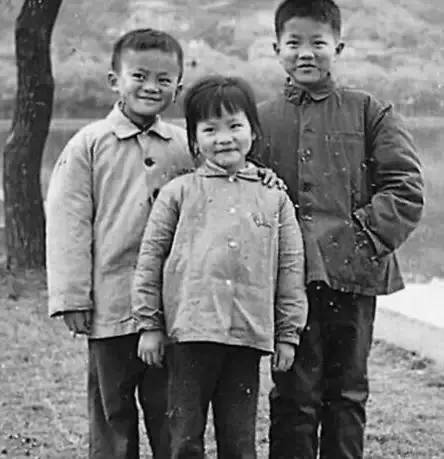
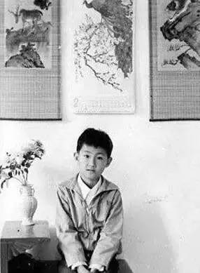

「童心には年輪がない。それは人生を愛するすべての人のものである」という言葉があります。子ども時代は私たちを虚飾から遠ざけ、心をさっぱりとさせてくれます。では、今の私たちから見れば手の届かない存在であるインターネットの大物たちの子ども時代はどのようなものだったのでしょうか。また、どのような知られざる物語があるのでしょうか。
1、馬雲

アリババ創業者 馬雲
馬雲は子供の頃から「バカな子」だった。幼い頃は喧嘩が大好きで、数え切れないほど喧嘩をしたが、一度も自分のためではなく、すべて友達のためだった。喧嘩で13針縫うけがをし、処分を受け、杭州八中に転校させられた。家庭の出身が良くなかったため、家庭内のプレッシャーが大きく、父は気性が激しかった。馬雲は父の拳の下で育ち、家にじっとしていられず、特に友達を作るのが好きだった。彼は言う。「私は大愚若智（見かけは賢そうで実は愚か）で、実はとても鈍い。頭が小さいので、一つずつしか考えられない。三つ続けて質問されたら、消化できない。」子供の頃から、馬雲は学業が優秀ではなく、数学で1点を取ったこともある。英語だけは特に良かった。その理由はなんと、「父に叱られたとき、英語で言い返したら、父は理解できず、それが気持ちよくて、そのまま英語を学び始め、学ぶほどに楽しくなった」ということだ。
2、馬化騰

テンセント創業者兼CEO 馬化騰
子供時代はとてもおとなしく、無口な子だった。天文に夢中になり、自然科学のことをよく考えていたが、一番の興味はやはり空の星と交流することだった。当時、この星と交流するのが好きな子供がソーシャル帝国を築くとは誰も知らなかった。そう、恥ずかしがり屋の小さな男の子が小馬哥（シャオマーガー）の子供時代だ。小馬哥こと馬化騰は、ものまねをするうちに、いつの間にか巨大なQQ帝国を築き上げ、中国人にまったく新しいコミュニケーション方法を作り出した。
3、劉強東
京東グループCEO 劉強東
彼は江蘇省宿遷の生まれで、江蘇省で最も貧しい地域の出身である。子供の頃、家は非常に貧しく、何年もの間、毎日の三食はサツマイモとトウモロコシだけだった。子ども時代の貧しさは彼に多くの痕跡を残した。この貧しさの中で育った少年は、後に馬雲の電子商取引分野における唯一のライバルとなった。2004年の初め、劉強東は電子商取引分野に参入し、「京東多媒体網」を設立した。2011年には「華人経済リーダー大賞」を受賞し、2015年には『フォーチュン』誌の「世界で最も偉大なリーダー50人」に選ばれた。
4、李彦宏
百度CEO 李彦宏
子供の頃、彼は山西陽泉晋劇団に採用されたことがある。劇団の先生は当時、彼を見て、色白で赤みが差し、とてもみずみずしい子だと思い、即座に合格を決めた。しかし、簡単に手に入るものは往々にして大切にされないものだ。彼は一番上の姉が大学生になると近所の人々が羨むのを見て、自分も大学に合格しようと志し、その後、順調に高身長・高収入・イケメンの「IT技術者」になり、国内最大の検索エンジン会社を築き上げた。
現在の百度は、従業員3、4万人、時価総額1000億ドル近くという大企業に成長し、国内インターネット三大巨頭の一つであり、国際的にも一定の影響力を持っている。
5、李開復

創新工場CEO 李開復
この可愛らしい男の子の誕生は、家族にとって非常に大きな「サプライズ（驚き）」だった。母は43歳の高齢で、医者の止めるのも聞かずに彼を産んだ。家には姉が多く、自分は遅く生まれたため、一番上の姉の子供は彼より1歳年上だった。そのため、彼には甥が子ども時代の遊び相手となり、一緒にたくさんの「おバカなこと」をした。
李開復はカーネギーメロン大学で学び、コンピューター科学の博士号を取得し、その後准教授を務めた。彼は情報産業の経営者であり、起業家であり、コンピューター科学の研究者でもある。アップル、SGI、マイクロソフト、Googleなど複数のIT企業で要職を歴任した。2009年9月にGoogleを退職した後、創新工場を創業し、会長兼最高経営責任者（CEO）に就任した。
6、ビル・ゲイツ

マイクロソフト創業者兼元CEO ビル・ゲイツ
彼は子供の頃から精力が人並み外れており、乳児の頃にはすでに自分で揺りかごを揺らすことができた。子供の頃から非常に考えることが好きで、何かに夢中になると全身全霊で打ち込んだ。彼こそ、史上最年少の世界一の富豪、ビル・ゲイツである。2016年3月1日、フォーブスは最新の世界富豪ランキングを発表した。ビル・ゲイツの個人資産は2015年より42億ドル減ったが、今回は750億ドルの個人資産で3年連続首位を維持した。
7、ザッカーバーグ

アメリカのSNS「Facebook」創業者ザッカーバーグ
このニコニコした男の子は、子ども時代にとても幸せだった。両親は可能な限り最良の教育環境を与えた。10歳の年に初めてパソコンを手に入れてから、彼は自分の人生の楽しみを見つけた。彼のコンピューターの才能は早くから明らかで、さまざまなコードを熟知しており、家庭教師として招かれたプログラミングの達人でさえ、これは神童だと驚嘆した。そう、この男の子こそがザッカーバーグ（マーク・エリオット・ザッカーバーグ）、アメリカのSNS「Facebook」の創業者であり、「第二のゲイツ」と称され、ハーバード大学コンピューター科学・心理学専攻中退者である。
出典：人民網
クリックしてノートを共有
ノートは本記事の内容を拡張したものでなければなりません！
記事の投稿はこちらをクリック
登録招待コードの取得方法
ノートを共有する前にログインしてください！
登録招待コードの取得方法